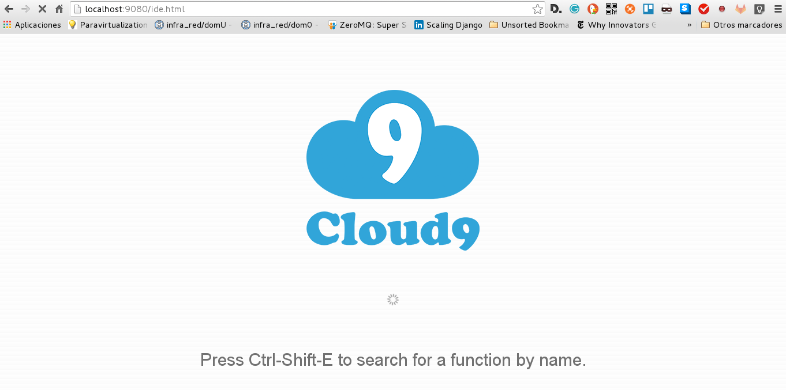

Entorno de Desarrollo en la nube Cloud9
Posted on lun 10 abril 2017 in Tutorial de Linux • 2 min read
Cloud9 es un Entorno Integrado de Desarrollo en línea, publicado como OpenSource desde la versión 3.0.
Acá les dejo otros enlaces de artículos sobre docker.
La aplicación la pueden acceder en c9.io .
A continuación se muestra una imagen del sitio:

Es desarrollado enteramente en javascript, node.js como backend, los espacios de trabajo se contruyen por medio de Docker.
Soporta varios lenguajes de programación, entre los principales se tiene:
- C/C++
- PHP
- Ruby
- Perl
- Python
- Javascript
- Go
Como cloud9 es OpenSource a parte de usarlo desde su sitio web, se puede montar un servidor, su código fuente se encuentra en github. El procedimiento de instalación lo encuentrán en el siguiente enlace.
En este caso se usará una imagen Docker para montarlo como servidor local. La imagen que se usará la pueden revisar en el siguiente enlace.
Para correr cloud9 como contenedor se ejecuta:
docker run -it -d -p 9080:80 -v /home/ernesto/worksplace/:/workspace/ kdelfour/cloud9-docker
En este caso se corre la aplicación desde el puerto 9080 y se usará como directorio de trabajo workspace.
Al hacer un docker ps se tiene lo siguiente:
CONTAINER ID IMAGE COMMAND CREATED STATUS PORTS NAMES
f4d06af60205 kdelfour/cloud9-docker "supervisord -c /etc/" 38 seconds ago Up 33 seconds 3000/tcp, 0.0.0.0:9080->80/tcp condescending_gates
Ahora se abre el navegador en el puerto 9080, a continuación se muestra la imagen:
Imagen mientras carga cloud9:

Entorno de trabajo y muestra de un Hola mundo!:

Como se puede ver, ya no es necesario usar la herramienta desde la web, ya puede usarse desde un servidor local usando una imagen Docker.
¡Haz tu donativo! Si te gustó el artículo puedes realizar un donativo con Bitcoin (BTC) usando la billetera digital de tu preferencia a la siguiente dirección: 17MtNybhdkA9GV3UNS6BTwPcuhjXoPrSzV
O Escaneando el código QR desde la billetera: